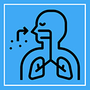

Breath focus
In this simple, powerful technique, you take long, slow, deep breaths (also known as abdominal or belly breathing). As you breathe, you gently disengage your mind from distracting thoughts and sensations. Breath focus can be especially helpful for people with eating disorders to help them focus on their bodies in a more positive way. However, this technique may not be appropriate for those with health problems that make breathing difficult, such as respiratory ailments or heart failure.
